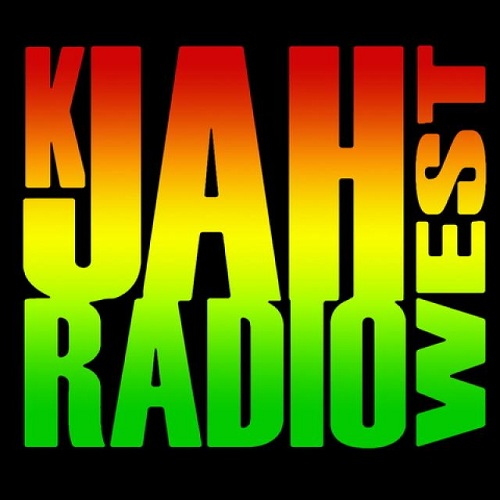

K-Jah West
《侠盗猎车手:圣安地列斯》
选择你的音乐
主页
Reggie Stepper - Drum Pan Sound
点击即可播放
Black Harmony - Dont Let It Go To Your Head
点击即可播放
Willie Williams - Armagideon Time
点击即可播放
The Pliers - Bam Bam
点击即可播放
Toots & The Maytals - Pressure Drop
点击即可播放
Barrington Levy - Here I Come
点击即可播放
Augustus Pablo - King Tubby Meets Rockers Uptown
点击即可播放
Buju Banton - Batty Rider
点击即可播放
I-Roy - Sidewalk Killer
点击即可播放
Max Romeo & The Upsetters - I Chase The Devil
点击即可播放
Blood Sisters - Ring My Bell
点击即可播放
Dennis Brown - Revolution
点击即可播放
Toots & The Maytals - Funky Kingston
点击即可播放
Shabba Ranks - Wicked Inna Bed
点击即可播放
Dillinger - Cocaine In My Brain
点击即可播放
Black Uhuru - Great Train Robbery
点击即可播放
不适合你的语言?